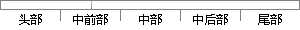

用户需要登录才能使用本应用，在登录界面用户可以选择注册完成操作后跳转到登录界面。
片段位置图

相似结果|
相似片段 1：的服务功能是个性化的，因此用户要先进行注册登录操作才能进入系统。设计用户注册、登录模块的软件流程，如图4．2所示。首次使用的用户必须先进行注册，在登录界面可以跳转到用户注册功能进行注册操作，注册完成
相似片段 2：选择注册新帐号，点击注册跳转到注册界面，如图所示，注册界面只支持从登录界面跳转，注册界面需要用户填写本人的基本信息，提交即可完成注册，如图5．3所示。值得一提的是，本系统支持QQ号码登录，点击使用QQ
相似片段 3：页面。如果注册信息准确无误，系统就保存用户的注册信息，并在数据库中更新保存，并向用户提示注册成功信息，然后跳转到登录后的系统界面，完成注册流程。其设计流程具体如图 4-4 所示。用户在需要登陆了系统时
相似片段 4：需要使用验证码技术，通过Web．config配置文件中的
|
※ 片段修改建议 ※
近似词参考：- 需要：必要
- 才能：才气
- 使用：利用
- 应用：利用 运用
- 操作：操纵
系统自动生成语句：用户必要登录才气利用本利用，在登录界面用户可以选择注册完成操纵后跳转到登录界面。
注：本片段修改建议为系统自动生成，仅供参考。